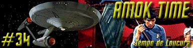
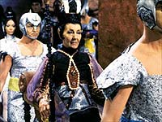
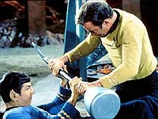
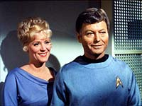
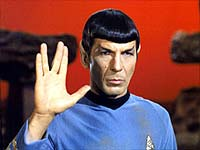
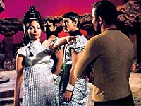
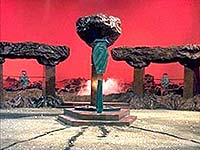
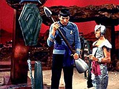

|
Srie
Clssica
Temporada 2

Anlise do episdio por
Carlos
Santos


| MANCHETE
DO EPISDIO Data Estelar: 3372.7 Enquanto o doutor McCoy conversa com Kirk em um dos corredores da Enterprise sobre o o que o mdico considera um comportamento atpico do primeiro oficial da Enterprise, este, em uma crise de fria, expulsa a enfermeira Chapel de seus alojamentos. Aps fazer a enfermeira sair correndo pelo corredor, ele percebe a presena de Kirk e praticamente exige que Kirk lhe conceda uma licena em seu planeta natal. Aps essa cena, Kirk conversa com Spock, totalmente transtornado, a respeito de sua licena, mas este permanece irredutvel em no dizer ao capito o que est acontecendo. Apesar do mistrio, Kirk permite a mudana de curso. Entretanto, uma necessidade diplomtica obriga o capito a mudar a rota novamente para o destino inicial, que era Altair VI.  A contragosto, Spock vai at a enfermaria, mas aps apresentar-se ao mdico diz que no pretende ser examinado. McCoy protesta e insiste at que Spock cede. Aps terminar o exame, o mdico invade o alojamento do capito dizendo que se Spock no for levado a seu planeta natal em uma semana, morrer. McCoy explica o pouco que sabe e Kirk mais uma vez vai a Spock e insiste em saber o que est acontecendo. Spock finalmente cede e explica com muita dificuldade que a biologia Vulcana faz com o corpo sofra violentas transformaes a cada sete anos num processo chamado Pon Farr. O capito promete sigilo e que diz tentar arrumar um jeito de levar a Spock a Vulcano. O capito e McCoy tentam convencer o almirante Komack, do comando da Frota Estelar, a permitir o desvio de rota e um pequeno atraso na chegada da nave a Altair, mas ele permanece irredutvel. Mesmo assim, Kirk ordena a mudana de curso para Vulcano. Chapel, que ouvia a conversa dos dois, sai em direo aos alojamentos de Spock com inteno de dar-lhe a notcia. Desta vez o comportamento dele estranhamente parece apontar para um certo flerte com a enfermeira, e esta se mostra bastante satisfeita com tal insinuao. Spock pede que ela lhe faa um pouco de sopa Ploo mek, e ela sai bastante feliz.  O trio transportado direto a uma rea pertencente a famlia de Spock, onde se dar a cerimnia Vulcana chamada Koon-ut-kal-if-fee, um antigo ritual onde os Vulcanos lutavam por suas mulheres. Spock explica a Kirk que os Vulcanos so prometidos a seus a pares quando tm sete anos de idade e, quando chegam idade correta, ambos completam o casamento. Minutos depois, o cortejo que oficializar o casamento chega ao local, e dele faz parte TPau, segundo Kirk e McCoy, uma importantssima pessoa da poltica Vulcana. Esta interpela Spock por causa da presena dos aliengenas, mas o Vulcano refuta, dizendo que eles so seus amigos e que seu direito pedir sua presena. Eles se preparam para o incio da cerimnia, mas, quando Spock d prosseguimento, algo inesperado acontece: TPring pede pelo combate. Por ser um estrangeiro, TPau permite que Kirk deixe o local neste momento, mas Kirk escolhe ficar, falando tambm por McCoy. Agora Spock, retomado pela febre e loucura do Pon Farr, ter que lutar com um adversrio escolhido por TPring. Para nova surpresa de todos, esta escolhe Kirk. Um Vulcano de nome Stonn, que acompanhava o grupo em silncio, protesta, reclamando para ele o direito de lutar por TPring, mas TPau o repreende.  Ele se apresenta a TPau e reafirma sua inteno de aceitar o desafio, ento as armas do combate so apresentadas, uma "Lirpa" para cada um deles, um basto com uma lmina afiada em uma extremidade e um martelo na outra. TPau declara que se ambos sobreviverem a esta arma, outras sero trazidas at que haja um vencedor, e s ento Kirk compreende que o combate entre eles ser at a morte. Ele e McCoy tentam protestar, mas em vo. A luta se inicia e Kirk logo se v em desvantagem. Spock mais forte e est mais familiarizado com o tipo de luta, alm de estar totalmente tomado pela insanidade. Kirk, por sua vez, luta contra o ar rarefeito e o calor de Vulcano, e sua incapacidade de ferir o amigo. Spock quase consegue um golpe mortal, ento McCoy intercede, pedindo a TPau que deixe-o injetar em kirk uma droga que ir melhorar a capacidade aerbica de Kirk, dando-lhe alguma chance de lutar com melhores chances. O pedido do mdico aceito, ele injeta a substncia e a luta recomea. Kirk resiste mais um pouco, mas no preo para Spock, que mata seu capito e vence o desafio. Assim que Kirk morre, Spock se liberta da insanidade, e imediatamente percebe o que fez. McCoy lembra que, com a morte de Kirk, Spock est no comando, e pergunta a este quais so as prximas ordens. Este manda que o mdico retorne nave e mande Chekov preparar um curso para a base estelar mais prxima onde ele pretende se entregar as autoridades da Frota Estelar.  A bordo da Enterprise ele segue direto para enfermaria, preocupado com os procedimentos de sua priso, onde fica sabendo que Kirk est vivo. McCoy diz ter aplicado uma droga que paralisou seu sistema nervoso e no um composto para a melhorar sua respirao, fazendo com que Kirk parecesse morto. Kirk recebe uma mensagem do comando da Frota Estelar autorizando atraso em sua chegada ao compromisso em Altair VI, a pedido de TPau, o que evitar alguns problemas com o comando da Frota Estelar. Eles retomam o curso para cumprir a agenda inicial.
No por acaso "Amok Time" um dos clssicos da Srie Clssica, com perdo do trocadilho. A loucura do Pon Farr de Spock proporcionou a oportunidade de um episdio com nuances absolutamente incrveis e importantes no s para este personagem como para o que seria o universo da franquia nas suas geraes seguintes. Tendo o personagem de Leonard Nimoy atingido j na poca das primeiras exibies da srie clssica um elevado patamar de popularidade era normal a curiosidade a respeito de Vulcano, seu lar, e por conseqncia de outros vulcanos, logo o background desenvolvido para esta edio da Srie Clssica traz bem vindas informaes a respeito do planeta natal de Spock. Tais informaes seriam utilizadas ao longo da existncia da franquia sempre que o assunto "Vulcanos" fosse requisitado.  Sobre Spock propriamente dito, ao ser submetido a violenta reao biolgica do Pon Farr, podemos ter uma idia de que tipo de emoes ele (ou qualquer outro Vulcano) tenta controlar dia aps dia, atravs da disciplina da lgica. claro que esta reao bioqumica e que s se repete a cada sete anos de acordo como roteiro, mas demonstra uma tendncia a ao por instinto e agressiva, e define um padro do que ser vulcano sem disciplina. Mostrar que o personagem tem fraquezas que precisa superar ao invs de retrat-lo como um super homem quase indestrutvel aumenta ainda mais a riqueza de Spock enquanto personagem. Devido formula usada na Srie Clssica, onde os episdios no guardavam nenhuma conexo entre si, isto no foi de grande impacto nos segmentos que vieram, mas com o passar dos anos tal legado foi efetivamente aproveitado nas edies cinematogrficas da franquia, principalmente por Nicholas Meyer.  Cabe ainda uma pequena observao: Embora o autor no goste de se apegar ao tema de que Vulcanos e Romulanos tm a mesma origem, uma vez que tal afirmao parece ter sido uma estratgia pensada somente por conta das necessidades de roteiro dos eventos de "Balance of Terror", tal teoria permite traar um comparativo de como seria um Vulcano sem lgica.Mais do que biologia talvez seja o episodio que melhor defina a "id" de Spock e seu dilema clssico com a solido absoluta. Ele est entre humanos, que o toleram, mais muitas vezes no o entendem o lgico e pragmtico comportamento Vulcano, pois mesmo anos de convivncia no conseguem eliminar diferenas culturais to fortes. Spock respeitado e mesmo querido, mas ainda assim um aliengena entre seus melhores amigos. Do outro lado ele no bem visto entre os seus. Por ser um filho mestio Spock no considerado um Vulcano em seu planeta natal, como pode ser notado nas palavras de TPau. Por ter deixado o planeta e passado a conviver com os humanos, muitos como TPau, devem achar que Spock renega as tradies de Vulcano. Numa cultura que como nos vemos, venera a tradio, a dimenso de tal escolha bem significativa. Por estes aspectos, no importa onde Spock esteja, ele est sempre s, seja entre humanos ou entre Vulcanos. Entretanto outro aspecto do personagem fica marcado. O gesto de convidar Kirk e McCoy para lhe acompanhar na cerimnia, e depois confrontar TPau, a este respeito uma mensagem clara a ambos os lados da moeda. Spock nunca abandona suas tradies e sua herana, como ele sempre faz questo de deixar claro, a todo momento, a bordo da Enterprise sempre que a situao exige, mas por outro lado ele tambm deixa claro que no se arrependeu de sua escolha quando traz seus amigos para sua casa a fim de compartilharem um de seus momentos mais particulares e ao fazer isto, Spock mostra que sabe quem , que sabe o por que de suas escolhas e que no se arrepende delas, e que sabe sobretudo valorizar a amizade de Kirk e McCoy.  Se a situao em Altair VI um mero festim para a Federao no fornecendo um motivo de verdadeira duvida para Kirk, outro dilema se coloca sobre Kirk em Vulcano, quando ele decide lutar contra Spock para proteg-lo. Com a mesma facilidade com que chuta a primeira diretriz quando bem entende, ele coloca o bem estar de seu amigo alm do seu prprio bem estar e de sua carreira. Pode no ser o certo sempre, e por diversas podem-se cometer erros at graves agindo desta maneira, mas no isso que significa "ser humano" !? Comprovando a mxima de que os opostos se atraem e completando o grande trio, est nosso mdico favorito. McCoy mais uma vez o elo entre eles. Ele o primeiro a perceber que Spock no est bem, demonstrando sua preocupao com o amigo que ele irrita sempre que pode. Depois McCoy quem diz a Kirk o que deve ser feito, e que se coloca ao lado de ambos em Vulcano. interessante ver como aparentemente ele o personagem mais frgil entre os trs, mas ao mesmo tempo o elemento fundamental de coeso, de forma simples e sbria, McCoy est sempre presente, no com suas mgicas de "curandeiro", mas como amigo e conselheiro. A seleo do elenco convidado tambm foi muito feliz. A linda e extica Arlene Martel foi uma grande escolha para TPring, e embora aparea muito pouco sua presena, elegncia e beleza acrescentam bastante, assim como Celia Lovsky, que consegue dar vida a uma Vulcana que ficou na memria de todo f da serie. A pronncia naturalmente estrangeira de Celia, nascida na ustria, contribui com a sua performance e ajuda a dar mais credibilidade a personagem aliengena, ento quem puder deve conferir a verso com som original. Sobre os valores de produo pode-se dizer que os costumes criados para Vulcanos so muito eficientes, e o uso da cmara manual para mostrar a perspectiva de Spock tambm funciona muito bem, porm o cenrio de papelo no ajuda muito. Este segmento ganharia muito se gravado em externas, o que infelizmente no foi possvel devido as restries oramentrias. Por fim claro, a antolgica exploso de alegria de Spock ao ver que Jim estava vivo, e o seu posterior constrangimento, regado a mais uma das provocaes de McCoy dispensa qualquer tipo de comentrio, devendo apenas ser guardada com carinho na memria dos fs.
Spock "After a time, you may find that having is not so pleasing
a thing, after all, as wanting. It is not logical, but it is often true." Spock "We shield it with ritual and customs shrouded in antiquity.
You humans have no conception. It strips our minds from us. It brings a madness
which rips away the veneer of civilization. It is the Pon farr, the time of
mating." Kirk "I suppose most of us overlook the fact that even Vulcans
aren't indestructible." Kirk "In the distant past Vulcans killed to win their
mates." McCoy "And they still go mad at this time. Perhaps the price they
pay for having no emotions the rest of the time." Kirk "I owe him my life a dozen times over - isn't that worth a
career? He's my friend."
Koon-ut-kal-if-fee: Casamento ou combate
Escrito
por Theodore Sturgeon Elenco: Celia Lovsky como T'Pau |